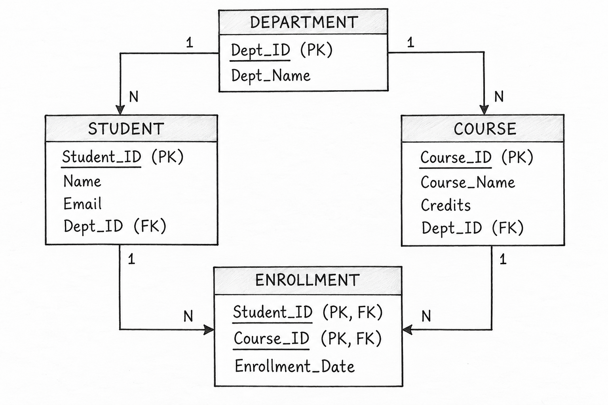

Q9. Create a Database Schema with Appropriate Tables, Primary Keys, and Foreign Keys for a Student Management System.
1. Introduction
A Student Management System is a database system used to store and manage information about students, departments, courses, and enrollments.
A Database Schema defines the structure of tables, their attributes, Primary Keys, Foreign Keys, and relationships.
2. Database Schema Diagram

3. Tables and Keys
The Student Management System consists of four main tables.
1. DEPARTMENT Table
Stores information about different departments.
- Dept_ID (PK): Uniquely identifies each department.
- Dept_Name: Stores the department name.
2. STUDENT Table
Stores personal and academic information about students.
- Student_ID (PK): Uniquely identifies each student.
- Name: Stores the student's name.
- Email: Stores the student's email address.
-
Dept_ID (FK):
References
DEPARTMENT(Dept_ID).
3. COURSE Table
Stores information about available courses.
- Course_ID (PK): Uniquely identifies each course.
- Course_Name: Stores the course name.
- Credits: Stores the course credits.
-
Dept_ID (FK):
References
DEPARTMENT(Dept_ID).
4. ENROLLMENT Table
Stores information about students enrolled in different courses.
-
Student_ID (PK, FK):
References
STUDENT(Student_ID). -
Course_ID (PK, FK):
References
COURSE(Course_ID). - Enrollment_Date: Stores the date of enrollment.
Composite Primary Key:
(Student_ID, Course_ID).
Both attributes together uniquely identify each enrollment.
4. Relationships Between Tables
- DEPARTMENT → STUDENT (1:N): One department can have many students, but each student belongs to one department.
- DEPARTMENT → COURSE (1:N): One department can offer many courses, but each course belongs to one department.
- STUDENT → ENROLLMENT (1:N): One student can have many enrollment records.
- COURSE → ENROLLMENT (1:N): One course can have many enrollment records.
The ENROLLMENT table connects STUDENT and COURSE, allowing a Many-to-Many (M:N) relationship between them.